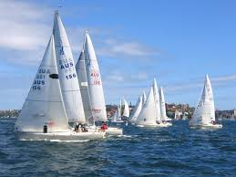
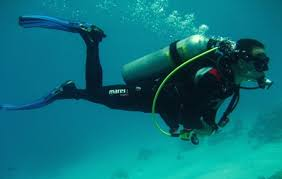
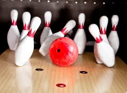
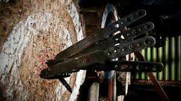

Яхтинг – это вид спорта и активного отдыха, связанный с управлением яхтами, как правило, парусными, но также и моторными. Он включает в себя как спортивные соревнования (регаты), так и круизы, морские путешествия и просто прогулки на яхтах. В широком смысле яхтинг – это стиль жизни, подразумевающий любовь к морю, парусам и всему, что с ними связано.
Подводное плавание с аквалангом, маской и ластами как разновидность спортивно-туристического отдыха, времяпрепровождения
Боулинг - это спортивная игра, в которой игроки катают шар по дорожке, чтобы сбить кегли. Цель игры - сбить как можно больше кеглей за определенное количество бросков.
Метание ножей - это техника владения метательным ножом, которая включает в себя спортивное, любительское и боевое направления. В спортивном метании ножей цель состоит в том, чтобы поразить мишень на определенной дистанции, развивая точность и дальность броска. Любительское метание ножей часто используется как хобби или для развлечения, в то время как боевое метание ножей может быть частью подготовки к рукопашному бою
